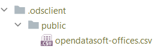

odsclient¶
A nonofficial client for OpenDataSoft API.


New: you can now use a local file cache ! Check it out below.
New: stream-download huge datasets to csv files directly, and use tqdm progress bars !
odsclient provides a minimal set of functions to grab a dataset or a collection of datasets from an OpenDataSoft (ODS) platform.
Its initial purpose is not to cover the full set of APIs available but to get a minimum viable set of features to work easily with the datasets.
Installing¶
> pip install odsclient
Optional:
- If you wish to display progress bars, you should also install
tqdm. - If you wish to download datasets as dataframes, you should also install
pandas.
Finally, if you plan to use api keys, we recommend that you install keyring as it will help you store the critical api keys in your operating system's password vault.
> pip install keyring
Usage¶
1. Basics¶
a- Downloading a "flat" dataset¶
The most basic thing that you can do is to download a whole dataset, similarly to what you can get when clicking on the links with your browser on a dataset's "Export" page:
from odsclient import get_whole_dataset
csv_str = get_whole_dataset("evolution-trafic-de-voyageurs-reseaux-ferres-france-2010-2014",
platform_id='public')
print(csv_str)
yields
Transport;Année;Millions de Voyageurs
SNCF - Trains/RER (y compris T4);2013;12103
RATP - Métro;2011;5022
RATP - RER;2010;7486
...
In addition:
-
you might wish to display a progress bar using
tqdm=True(pip install tqdmfirst). Note that on some ODS platforms the HTTP HeaderContent-Lengthis not set, so you might only see a download rate, not an actual progress bar. -
you might wish to download directly the dataset to a csv using streaming and without loading it in memory. This can be achieved by setting
to_path=<path>where the path can be a string or apathlib.Pathinstance.
Finally, if you have pandas installed, you can get the dataset directly as a dataframe:
from odsclient import get_whole_dataframe
df = get_whole_dataframe("evolution-trafic-de-voyageurs-reseaux-ferres-france-2010-2014",
platform_id='public')
print(df.head())
yields
Transport Année Millions de Voyageurs
0 SNCF - Trains/RER (y compris T4) 2013.0 12103.0
1 RATP - Métro 2011.0 5022.0
2 RATP - RER 2010.0 7486.0
3 RATP - RER NaN NaN
4 SNCF - Trains/RER (y compris T4) NaN NaN
b- Using another ODS platform¶
By default the base url used to access the OpenDataSoft platform is https://<platform_id>.opendatasoft.com, with platform_id='public'. In the methods above, you can change either the platform id with platform_id=... if your target ODS platform has a standard host name, or the entire base url with base_url=....
If you wish to check the result without executing the method, you can create an ODSClient object with the same parameters and inspect its <client>.base_url :
from odsclient import ODSClient
default_client = ODSClient()
print("Default: %s" % default_client.base_url)
client_with_custom_pfid = ODSClient(platform_id='my_ods')
print("Custom `platform_id`: %s" % client_with_custom_pfid.base_url)
client_with_custom_baseurl = ODSClient(base_url="https://my_ods_server.com/")
print("Custom `base_url`: %s" % client_with_custom_baseurl.base_url)
yields
Default: https://public.opendatasoft.com
Custom `platform_id`: https://my_ods.opendatasoft.com
Custom `base_url`: https://my_ods_server.com
Note that any trailing slash is automatically removed from custom base urls.
c- Declaring an API key¶
Most ODS servers require some sort of authentication to access some of their contents. odsclient supports authentication through API keys (see ODS API Documentation). There are several ways that you can use to specify an api key to use for your ODS interactions.
explicit, temporary¶
If your need is a "quick and dirty" test, you can use direct apikey=... argument passing. This is the most insecure way of all, since your code will contain the key as a readable string. It should only be used as a temporary workaround, and should never be committed with the source code.
csv_str = get_whole_dataset("world-growth-since-the-industrial-revolution0",
apikey="my_non_working_api_key")
interactive¶
If your application tolerates user interaction through the terminal, you can make the above more secure by using getpass() so that users are prompted for the api key at runtime:
from getpass import getpass
csv_str = get_whole_dataset("world-growth-since-the-industrial-revolution0",
apikey=getpass())
permanent¶
In all other cases, we recommend that you write apikey-agnostic code such as the one below:
csv_str = get_whole_dataset("world-growth-since-the-industrial-revolution0")
In that case, odsclient will try several strategies to find an api key:
-
first it will look for an
ods.apikeytext file containing the api key. The file should obviously not be committed with the source code (use.gitignore!). This is not the most secure solution, as malicious programs on your computer may have access to the file, and moreover you may commit it by accident (human error prone). You can override the default file path with theapikey_filepath=...argument. -
then if
keyringis installed (pip install keyring), it will check if there is an entry in it for service<base_url>and username'apikey_user'.keyringleverages your OS' vault (Windows Credential Locker, macOS Keychain, Ubuntu SecretService, GNOME Keyring, etc.). This is the most secure method available, it is therefore highly recommended. You can override the default keyring entry username with thekeyring_entries_username=...argument. You can easily add or remove an entry in the keyring with theodskeyscommandline utility, through the OS interface, or with thestore_apikey_in_keyring/get_apikey_from_keyring/remove_apikey_from_keyringpython API provided inodsclient. -
finally it looks for an
ODS_APIKEYOS environment variable. This environment variable should either contain a single api key without quotes (e.g.aef46reohln48), or a dict-like structure where keys can either be<platform_id>,<base_url>, or the special fallback key'default'(e.g.{'public': 'key2', 'https://myods.com': 'key3', 'default': 'key1'}). This method is not the most secure solution because malicious programs can access the OS environment variables ; however it should be preferred over the file-based method as it is not human error-prone. Besides it can be handy for continuous integration jobs.
If you wish to force usage of an api key (and prevent any ODS query to be made if none is found), you may wish to set enforce_apikey=True:
csv_str = get_whole_dataset("world-growth-since-the-industrial-revolution0",
enforce_apikey=True # raise if no apikey is found
)
If no api key is found, the above yields:
odsclient.core.NoODSAPIKeyFoundError: ODS API key file not found, while it is
marked as mandatory for this call (`enforce_apikey=True`). It should either
be put in a text file at path 'ods.apikey', or in the `ODS_APIKEY` OS
environment variable, or (recommended, most secure) in the local `keyring`.
See documentation for details:
https://smarie.github.io/python-odsclient/#c-declaring-an-api-key.
Note that you can generate an API key on this web page: [...].
This can be handy if you wish your users to see a quick help at first call reminding them on the various ways to provide an api key.
Finally, for debugging purposes, you may wish to use get_apikey() to check if the api key that is actually used is the one you think you have configured (through a file, env variable, or keyring):
from odsclient import get_apikey
print("api key used: %s" % get_apikey(base_url="https://my_ods_server.com/"))
d- Pushing a dataset (Realtime API)¶
Pushing new data to the Realtime API of ODS works through the push_dataset_realtime function.
In order to push data you need to get a pushkey for your dataset at the Sources tab
on the dataset definition page in order to get this work.
The pushkey is independent from your API key. Passing your API key as the pushkey won't work.
You can push the data as CSV or as a pandas dataframe, as shown below.
Pushing a CSV¶
The simplest way to push a dataset is to provide a string following the CSV format:
from odsclient import ODSClient
o = ODSClient('<<ODS-platform-id>>')
csv = """column_1,column_2
1,2
3,4
"""
res = o.push_dataset_realtime('<<dataset-id>>',
csv,
format='csv',
csv_separator=',',
push_key='<<your-push-key>>')
Pushing a DataFrame¶
If you have pandas installed you can also push a DataFrame directly:
import pandas as pd
from odsclient import ODSClient
o = ODSClient('<<ODS-platform-id>>')
dataset = [
{'a': 1, 'b': 2},
{'a': 3, 'b': 4},
]
p_df = pd.DataFrame(dataset)
res = o.push_dataset_realtime("<<dataset-id>>",
p_df,
format='pandas',
push_key='<<your-push-key>>')
See API reference for details.
2. Advanced¶
a. Caching¶
If you use some datasets often, you might not wish to make a query to the ODS platform everytime your code runs. To avoid useless calls, you can now use the file_cache argument, in any of the dataset retrieval methods. It can either receive a path-like object indicating the folder to use as the cache root, or a boolean (True means .odsclient/, False means cache disabled).
csv_str = get_whole_dataset("opendatasoft-offices", file_cache=True)
You should see the following file created:

The next usage of this dataset (through get_whole_dataset or through get_whole_dataframe) will not make a network call and will instead reuse this local file.
In addition you have access to two utility methods :
-
clean_cachecleans parts or all of the cache. Note that this is equivalent to removing the folders/files by hand, so you can do this too. -
get_cached_dataset_entryor<ODSClient>.get_cached_dataset_entryreturns aCacheEntryobject representing the cached file. This object contains its path and provides handy methods to read and write the file.
All files in the cache are converted to utf-8 encoding
In order to avoid storing encoding information in the cache folder, odsclient converts all downloaded datasets to utf-8 encoding before storing them in the cache. This should have no side-effect for you except if you try to read the cached file directly without using the CacheEntry.read() method, or if your dataset contains old/alternative forms of east asian kanji that cannot be represented with unicode encodings.
Main features / benefits¶
-
Simple access to ODS API to retrive a whole dataset as text (csv) or dataframe
-
Support for many methods to define an api key, independently of the source code: different users may use different methods (env variable, api key file, keyring) while using the same odsclient code.
-
Easy-to-use caching capabilities on the local disk.
See Also¶
This library was inspired by:
azmlclientkeyring- Work in progress: using KeePass as a
keyringbackend. Here and here
Others¶
Do you like this library ? You might also like my other python libraries
Want to contribute ?¶
Details on the github page: https://github.com/smarie/python-odsclient